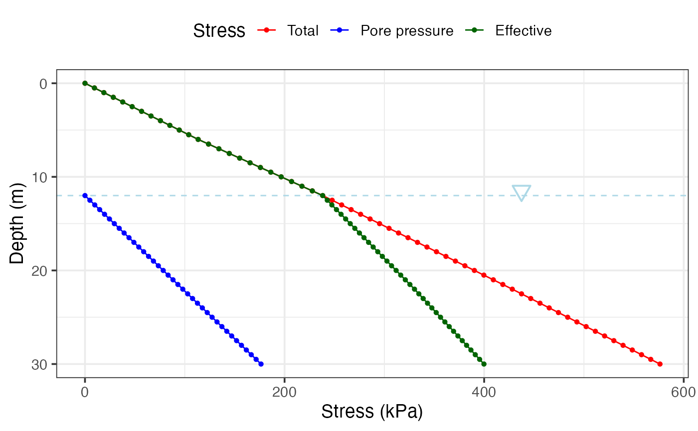

Builds a depth profile of total stress, pore pressure, and effective stress, and returns both the data and a plot.
Arguments
- boundaries
Numeric vector of layer boundaries (m), in increasing order. For example,
c(6, 12, 22, 30).- soils
Character vector of soil names for each layer (length must be
length(boundaries)).- unit_weights
Numeric vector of unit weights (kN/m^3) for each layer (length must be
length(boundaries)).- NF
Numeric scalar. Water table depth (m). Use
NA_real_to omit pore pressure.- step
Depth increment (m) used to discretize the profile. Default is
0.5.
Value
A list with:
- Profile
A tibble with depth, layer, unit weight, total stress, pore pressure, and effective stress.
- Graph
A ggplot2 object.
See also
Other soil mechanics:
Casagrande_LL(),
DS_plot(),
Mohr_Circle(),
bearing_capacity(),
compaction_test(),
fallcone_limits(),
induced_stress(),
particle_size_graph()
Examples
boundaries <- c(6, 12, 22, 30)
soils <- c("Sansy silt", "Fine sand", "Clay", "Gravel")
unit_weights <- c(18.9, 20.8, 19, 18.5)
res <- insitu_stress(boundaries, soils, unit_weights, NF = 12)
res$Profile
#> # A tibble: 61 × 6
#> Depth Soil Unit_Weight Total_Stress Pore_Pressure Effective_Stress
#> <dbl> <fct> <dbl> <dbl> <dbl> <dbl>
#> 1 0 Sansy silt 18.9 0 NA 0
#> 2 0.5 Sansy silt 18.9 9.45 NA 9.45
#> 3 1 Sansy silt 18.9 18.9 NA 18.9
#> 4 1.5 Sansy silt 18.9 28.4 NA 28.4
#> 5 2 Sansy silt 18.9 37.8 NA 37.8
#> 6 2.5 Sansy silt 18.9 47.2 NA 47.2
#> 7 3 Sansy silt 18.9 56.7 NA 56.7
#> 8 3.5 Sansy silt 18.9 66.2 NA 66.2
#> 9 4 Sansy silt 18.9 75.6 NA 75.6
#> 10 4.5 Sansy silt 18.9 85.1 NA 85.1
#> # ℹ 51 more rows
res$Graph
#> Warning: Removed 24 rows containing missing values or values outside the scale range
#> (`geom_line()`).
#> Warning: Removed 24 rows containing missing values or values outside the scale range
#> (`geom_point()`).
